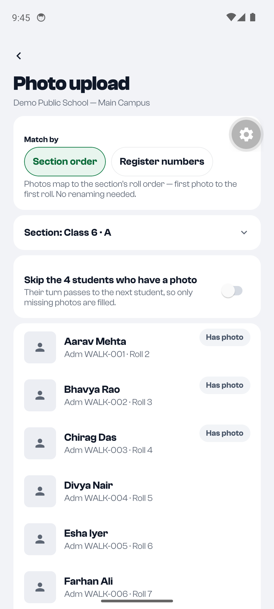

The screen today is the web's three-step flow squeezed onto a phone: settings first, then a long list of 72-point rows with small photos, and the Upload button at the bottom of that list. Below are two ways to do it as a phone screen. A keeps the gallery workflow but makes faces the main thing on screen. B adds a camera mode for photo day, so nothing needs matching afterwards. They can ship together: B's photos land in A's grid.
Today

Today, Class 6 · A. Five students fill the screen, and the photo is 48pt next to a lot of text.
Settings come before photos. You choose "Match by", a section and a sort before seeing a single face.
The photo is the smallest thing in the row. Checking "is this the right kid?" is the whole job, so the face should be big.
Fixing a match is a menu. "Move up / move down" one step at a time when photo 7 is off by five.
The main button is out of reach. Upload, progress and failures are at the end of a 40-row list.
Jargon. "Section order" and "Register numbers" are words for how the code works.
A · Grid first
Start from the section and its gaps, pick photos, then check a grid of faces in roll order. Fix a match by tapping two cards to swap them. One sticky bar holds the next action all the time. Settings move into a small sheet.
9:45
Student photos
2025–26 · Main Campus
17 students have no photo
4 of 21 done in this session.
Pick a section
Class 6 · A
8 of 12 missing
8 missing
Class 6 · B
All 9 missing
9 missing
A1 · Start. Opens on what's missing, per section, instead of a settings form. The section with the most gaps is first. Needs a small API: photo counts per section (the roster summary already counts "no photo" for the school).
9:46
Class 6 · A
10 photos · 8 matched
All 12Missing 8Has photo 4Extra 2
Tap two photos to swap them · tap a face to see it big
Upload 8 photos
A2 · Check the grid. Three faces across, roll on the corner, about 12 kids a screen. "Has photo" kids are skipped by default (faded, their turn passes on). The filter row jumps to what needs a look. Settings (order, mode) sit behind the top-right button. Upload is always in reach.
9:46
Class 6 · A
Swapping
Now tap the photo to swap with Esha'sCancel
All 12Missing 8Has photo 4Extra 2
A3 · Swap. Tap Esha's card (it lifts and gets a ring), then tap Farhan's: the photos trade places, nobody else moves. That's the one fix that's needed most, done in two taps instead of five "move down"s. Long-press opens the card's sheet (A4).
9:47
Class 6 · A
Divya Nair
Roll 5 · WALK-004
IMG_20261109_0912.jpg · 9:12 am
Was absent — no photoThe next students move up one photo
Not a student's photoTake it out; the next photos move back one
Retake nowOpens the camera just for Divya
A4 · One card's sheet. The actions are named for what happened on photo day ("was absent", "not a student's photo"), not for what the list does. Each says what will shift. Retake is the bridge to B.
9:48
Class 6 · A
Uploading 6 of 8
1 didn't upload — no internetRetry
Keep this screen open
A5 · Uploading. Each card shows its own state: a tick, a spinner, a red ring. Failures go to the top with one Retry, not hidden among 40 rows. Progress sits in the sticky bar. Open: keep uploading if the screen is left? (Needs a background task — later.)
9:46
Class 6 · A
Matching
Photos go to students by
Roll order
File name = adm. no.
Photo order
Time taken
File name
Skip students who have a photo4 in this section
Clear all photosStart this section again
A6 · Settings sheet. Everything that used to sit above the list. Most people never open it. When file names look like admission numbers, the app picks "File name" itself and says so in a toast.
B · Camera first (photo day)
On photo day the teacher walks the class with the phone. The app shows who's next in roll order; you take the picture and it moves on. Each photo is tied to a student when it's taken, so matching never happens. It uploads in the background while you keep shooting.
9:12
Class 6 · A · 3 of 8
ROLL5
Divya NairWALK-004 · no photo yet
Absent
Next6 · Esha Iyer7 · Farhan Ali
Skip for now
B1 · Shooting. Who's next is big, on the screen, with the roll number. A face guide keeps the framing the same for every ID card. "Absent" skips them and keeps them on the list for later. Kids who already have a photo are left out of the queue.
9:12
ROLL 5
Divya Nair
Moving on in 2 s…
Retake
Next: Esha
B2 · Just taken. A short look at the shot with Retake. It moves on by itself after 2 seconds, so a class of 40 is 40 taps. Upload starts straight away in the background.
9:31
Class 6 · A
Photo day
7 photos saved. 1 absent.Take Divya now
Done
B3 · Finished. The same grid as A, so there's one place to look at a section's photos. Absent kids stay as gaps with a one-tap "take now" for the next day.
Compared
A · Grid first
B · Camera first
Fits when
A photographer or staff took photos already, in the gallery or as named files.
A teacher takes photos in class, on the phone.
Matching mistakes
Possible; fixed in the grid by swapping.
None — each photo is tied to a kid when taken.
Build size
Medium: reshape today's screen. One small API (missing counts per section).
Bigger: a camera screen (expo-camera), background upload queue, offline retry.
Risk
Low; same logic as now.
Camera handling on cheap Android phones; uploads on poor school Wi-Fi.
Together
B's results show in A's grid, and A's "Retake now" opens B for one kid. A first, B after, is a natural order.